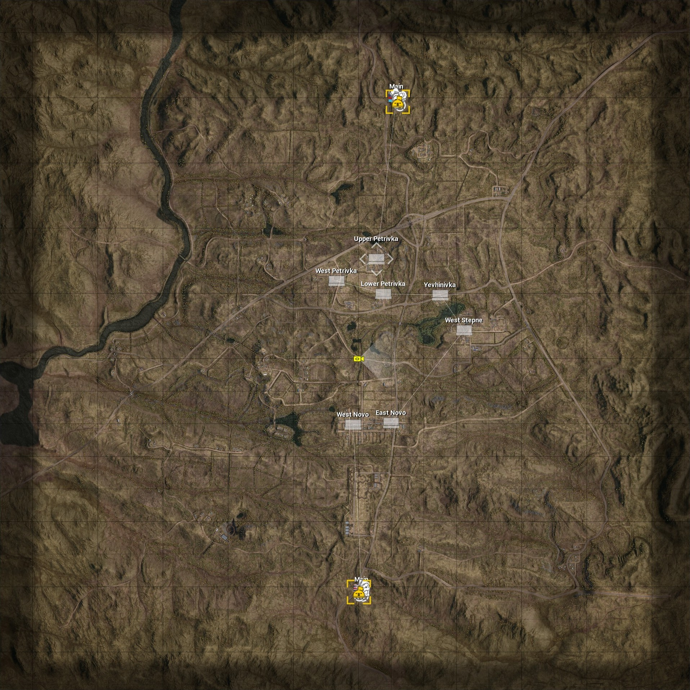

Yehorivka
Yehorivka, better known as Yeho is a....

Gorodok
Gorodok is unique because...


Goose bay
Goose bay is a canada based map


Players map
The player himself has a map that they can use in game

this map also contains a lot of icons with different meanings
Icons
In this chapter we will go by all the different icons and what they mean